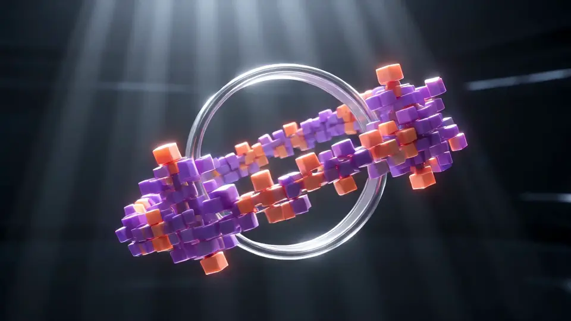
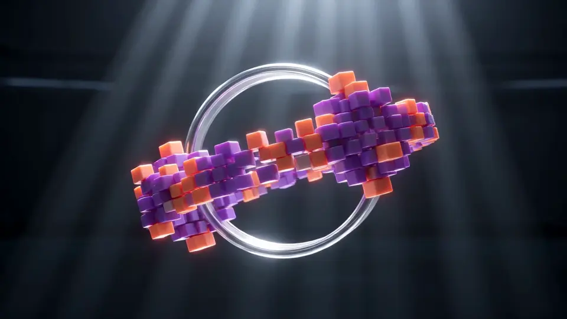
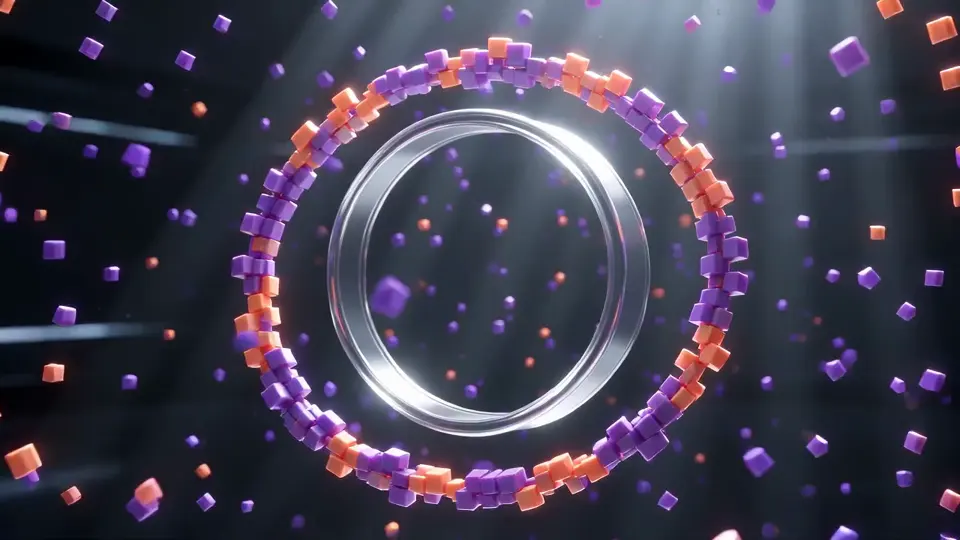
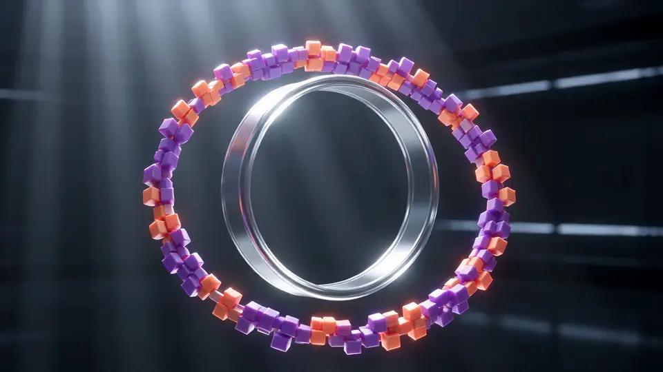

الدفتر السريع
التقط فكرة غير مكتملة بنقرتين واحفظها في المشروع الذي تنتمي إليه.
عند تشغيله، يعيدك التمرير بعد آخر قطع إلى القطع الأول بملاحظة الإصدار التالية. أوقفه لتنتهي الصفحة عند نموذج «ابدأ حلقة».
استوديو واحد للمبدعين: الأفكار والمسودات والإصدارات في مكان واحد، فتقلّ علامات التبويب بينك وبين النشر.
حلقة علامة تجريبية من Landscape Lab. كل ما في هذه الصفحة من إصدارات وأرقام وأقوال محتوى تجريبي.
جديد في هذه الدورة
v2.0 · أكتوبر
جدار الإلهام ينفتح أمام المتعاونينادعُ حتى عشرة أشخاص إلى لوحة، بمؤشر لكل واحد منهم.
جديد في هذه الدورة
v2.1 · ديسمبر
تسجيلات صوتية في الدفتر السريعدندن لحنًا أو اقرأ سطرًا بصوت عالٍ فيصل مكتوبًا بجانب التسجيل.
جديد في هذه الدورة
v2.2 · يناير
غرفة المسودات تقارن بين أي نسختينتُظهر التغييرات سطرًا بسطر للنصوص وطبقة بطبقة للأعمال الفنية.
جديد في هذه الدورة
v2.3 · فبراير
رابط المراجعة يضيف الطوابع الزمنيةيستطيع المراجع ترك ملاحظة عند 01:42 من عملك فتنتقل إليها مباشرة.
جديد في هذه الدورة
v2.4 · مارس
منصة الإطلاق تجدول عنكاختر يومًا وستنشر في كل قناة ربطتها، بتوقيت جمهورك.
التقط فكرة غير مكتملة بنقرتين واحفظها في المشروع الذي تنتمي إليه.

ثبّت المراجع والألوان والمقاطع على لوحة لا نهائية تحتفظ بتاريخها.

احتفظ بكل نسخ العمل جنبًا إلى جنب واسترجع النسخة التي أعجبتك يوم الثلاثاء.

أرسل رابطًا خاصًا واجمع الملاحظات مثبتة على اللقطة أو الميزان أو السطر بدقة.
خطّط لإصداراتك بحسب طاقتك الفعلية، بتذكيرات لطيفة بدل المواعيد الحمراء.

صدّر مرة واحدة وانشر في متجرك ونشرتك وحساباتك بالمقاسات الصحيحة.
كنت أضيّع نصف يوم فقط لأجد الملف المناسب. الآن انتقل الألبوم من المسودة إلى الإصدار في ستة أسابيع.
داليا مورينو، كاتبة أغانٍ وصانعة مجلات مستقلة، فالنسيا
مجاني للمبدعين الأفراد. أخبرنا ماذا تصنع وسنجهّز استوديوك قبل أن تسجّل الدخول.
هذه الصفحة حلقة. اضغط الزر لتبدأ من جديد بملاحظة الإصدار التالية. ولإيقاف التكرار أطفئ مفتاح «التكرار» في الأعلى، أو اضغط End لتتوقف هنا.